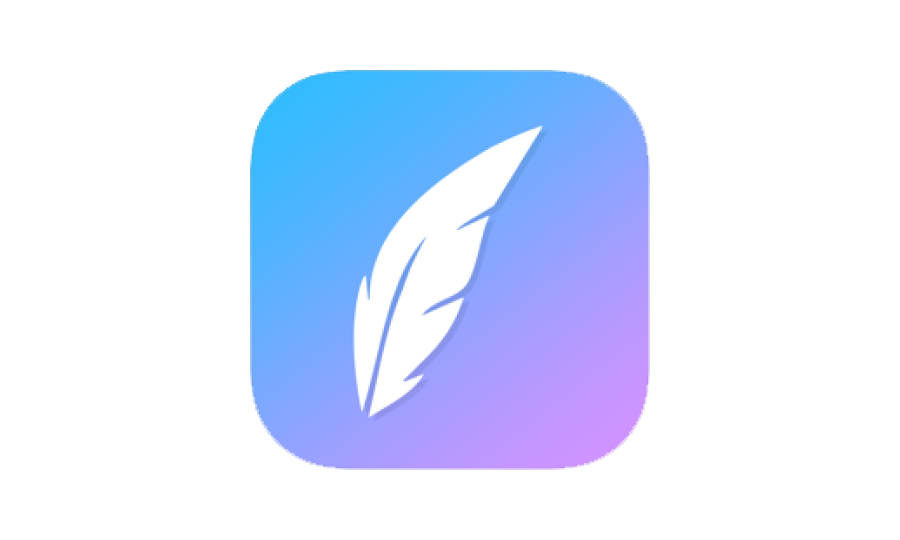

Competitive Analysis
Different Blogging and Writing Styles
Medium allows anyone to read, interact, write, and publish whatever they choose. It provides curated content and is displayed cleanly. Users can highlight passages and control how to view their content (text size, dark mode, etc). However, the login process is inconvenient; after logging in with an email address, an email is sent with a link that must be clicked to complete the login process.
Tumblr is one of the oldest social networks and thus has a very wide audience and recognizable brand. Users can customize their feed's look, share and interact with content and users, post whatever they wish, and the onboarding process was quick. However, dashboard customization isn't as robust (dark mode appears to be the only option).
Facebook is the most dominant social media platform, and has become a registration option for many services. Users can create and follow groups and pages based on their interests. However, it can feel very bloated with all its available features (such as Market and Dating in recent months), while Messenger is the only standalone app.

Poetreat helps users write poetry with rhyme schemes and keeps a line-by-line word count. Users can set rhyme schemes for the app to provide rhyming words based on the scheme, and can share or export their work. The design is minimalistic so users can focus on writing. However, typos aren't recognized, projects don't always save, and under the free version only 3 projects can be saved.